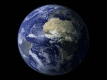
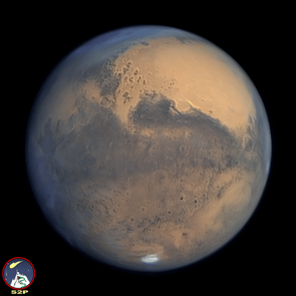
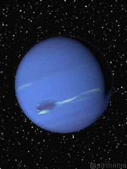
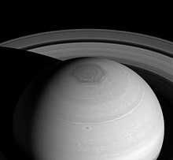
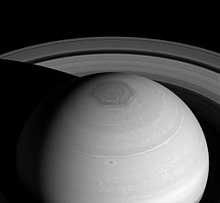

Mínima: -180°C
Media: 462°C
Mínima: -82°C
Mínima: -140°C
Mínima: -163°C
Mínima: -191.15°C
El planeta Mercurio viene siendo el primer planeta dentro de la lista de los planetas del sistema solar tiene caracteristicas algo interesantes, pero se destaca de este sus temperaturas tan altas y tan bajas que oscilan entre -180 ºC y +430 ºC, pero ¿A qué se debe todo este tipo de temperaturas?
Mercurio cuenta con 2 lados, el lado de día y el lado de noche, esas vienen siendo sus caras, y he de deducirse que las altas temperaturas de un lado y las bajas temperaturas del otro se deben a que la rotación del planeta es tan lenta que su lado oscuro o tarda mucho tiempo en ver la cara del sol, y es por eso que dicho planeta
Dato curioso: un año en mercurio son 88 días, y los días en mercurios son tan lentos que una sola rotación sobre su eje le tarda 58 días, por lo que mercurio en un año de su planeta son 1.6 vueltas en su orbita
Según algunas fuentes, el planeta se Mercurio adquiere ese nombre por el Dios de la mitología romana, el mensajero veloz, este nombre se le atribuye porque el planeta mercurio al ser el que está más cerca del sol, puede orbitarlo más rápido que cualquier otro planeta del sistema solar. planeta el cual puede ser visto en el amanecer o en el atardecer, pero nunca de media noche y esto es porque visto desde la tierra el planeta mercurio. se ve cerca del sol
🔼El planeta Venus es el segundo planeta del sistema solar más cerca del sol, y a su vez es uno de los planetas más próximos al nuestro, tiene caracteristicas muy interesantes como que un día en este planeta dura más que un año de dicho planeta. Dentro de esto también entra que el tamaño de venus es similar al del planeta tierra, pero su temperatura, sus gravedad y rotación son muy distintas.
El nombre de venus, como es de esperarse proviene de un Dios romano, o más bien, una Diosa. Desde la antigüedad Venus era uno de los astros que se observaban a simplevista, era muy brillante y muy bello, y por esto se le atribuyó el nombre de Venus, Diosa del amor y la belleza.
Desde el siglo pasado en el planeta venus, el señor Cornell H. Mayer y su equipo se encargó de enfocar con su radio telescopio a Venus, y estos se llevaron una gran sorpresa, una intensa radiación en la frecuencia de las microondas, que los llevó a descubrir que Venus tenía temperaturas de 400°C.
| Temperaturas de los planetas del sistema solar | ||||||||
|---|---|---|---|---|---|---|---|---|
| Mercurio | Venus | Tierra | Marte | Júpiter | Saturno | Urano | Neptuno | Plutón |
|
|
 |  |
|
|
|
 |
|
|
| Máxima: 430°C Mínima: -180°C |
Máxima: 480°C Media: 462°C |
Máxima: 57°C Mínima: -82°C |
Máxima: 20°C Mínima: -140°C |
Máxima: 121°C Mínima: -163°C |
Máxima: -130.15°C Mínima: -191.15°C |
Media: -218°C | Media: -218°C | Media: -234°C |
Los cientificos se preguntaban por qué este planeta era tan caliente, es el planeta más caliente del sistema solar y no es el más cercano al sol. Fue ahí donde el genio y astrofísico Carl Sagan desarrolló una tesis muy acertada en la que planteaba que el planeta tenía una atmosfera muy densa de CO2 (Gases de efecto invernadero), que no permitía que los rayos solares o la radiación solar escapara del planeta haciendo así que este planeta adquiera temperaturas tan altas
La respuesta no se sabe con exactitud, ya que hay muchas teorias, pero hay pocas cosas que avalen las teorias. Se suele creer que es por su rotación, ya que este planeta gira en dirección contraria a los demás planetas del sistema solar, sin contar de que su rotación es lenta, los polos de dicho planeta están invertidos, entre otros factores.
🔼El planeta tierra es el planeta en el que nosotros, los seres humanos y la vida existe. Evidentemente no es el único planeta con vida en el universo, pero es el único del cual se tiene registro de vida inteligente.
Sin embargo, la tierra tiene una historia muy interesante del cual mencionaremos de manera resumida como se formó la primera forma de vida:
La tierra se formó hace 6.450 millones de años junto con todo el
sistema solar. Después de haberse creado, el sistema solar estaba en una
fase muy primitiva, por lo que habían planetoides y asteroides en
abundancia por lo que se dice que un protolaneta se estrelló con la
tierra, así lanzando un montón de fragmentos rocosos que al final
terminarían formando nuestro satelite natural, la luna.
Después de condensarse a partir del polvo cosmico y del gas mediante la
atracción gravitacional, la tierra era casi homogenea y bastante fría,
pero la continuada contracción de materiales y la radioactividad de alguno
de los elementos más pesados hizo que se calentara, después comenzó a
fundirse bajo la influencia de la gravedad, produciendo una diferenciación
de la corteza, el manto y el nucleo, los elementos más pesados como el
hierro y el niquel cayeron al centro de la tierra para formar el nucleo,
al mismo tiempo la erupción de numerosos volcanes provocó que a la
superficie salieran vapores y gases volatiles y ligeros. Algunos eran
atrapados por la gravedad de la tierra y formaron una especie de atmosfera
primitiva, mientras que los vapores de agua condensados formaron los
primeros oceanos.
Marte, el planeta rojo. Este planeta tiene la mitad del tamaño del nuestro, y tiene caracteristicas bastante interesantes, como que su superficie es un tanto rojiza, por lo que contiene mucho óxido de hierro, aparte tiene una atmosfera un tanto densa hecha de dioxido de carbono, nitrogeno y argón, tiene volcanes como nuestro planeta, y se dice que en un pasado tuvo mares. Como la tierra, este planeta también tiene estaciones, polos, cañones, etc.
El planeta también cuenta con lunas, de hecho, tiene 2 y se llaman Phobos y Deimos las cuales tienen como caracteristica ser más pequeña que nuestra luna. Algo curioso, es que el planeta también cuenta con eclipses en donde se puede apreciar la disimilitud de sus lunas.

Marte es un planeta muy interesante, este cuenta con un cañón que se puede ver desde un telescopio el cual se llama valle marineris, y la peculiaridad de este es que es 3 veces más grande que el gran cañón que tenemos en la tierra.
Sin duda alguna es un planeta muy bonito, pero aparte de esto también está el famoso monte olimpo, el cual es el monte más grande de todo el sistema solar, o más bien, el volcan más alto, porque la montaña más grande está en el asteroide Vesta. Pero, volviendo al tema principal, el monte olimpo es 3 veces más grande que el everest; mientras que el everest es empinado, el monte olimpo es ancho y se eleva hasta 22 km sobre el nivel del mar, lo que sería imposible en la tierra, porque la gravedad lo colapsaría, ya que la gravedad en marte es más ligera. En la tierra si pesas 88kg como yo, en marte pesarías 33kg.
Júpiter, el gigante gaseoso es el planeta más grande de nuestro sistema solar, este es un planeta gaseoso, por lo que está hecho de Hidrogeno y nitrogeno, es parecido a una estrella, pero este no alcanzó a ser tan masivo como una, y por eso es un planeta más del sistema solar. Este como caracteristicas superficiales este cuenta con unos patrones alineados y unas manchas, y esto son básicamente las tormentas de júpiter, hay tormentas que en júpiter han durado cientos de años, como la gran mancha roja, que desde hace cientos de años está durando.

Júpiter es un gigante hecho de gas, por lo que no tiene una superficie, es decir, tiene una atmosfera muy grande y densa de Nitrogeno e Hidrogeno, pero se dice que este planeta cuenta con un núcleo sólido del tamaño de la tierra apróxiamadamente, pero, ¿Por qué este nucleo es sólido?
Saturno, el sexto planeta es un planeta gaseoso, al igual que su hermano mayor Júpiter, este planeta está compuesto de hidrogeno y helio, y una de sus caracteristicas más llamativas es que es el segundo planeta más grande de nuestro sistema solar, y cuenta con un sistema de anillos al rededor de él.
Saturno, al estar más lejos del sol que jupiter y el resto de planetas cuenta con una traslación que dura 29 años y 167 días terrestres, saturno es parte de los denominados planetas exteriores, y este tiene un radio de 58.232 km, y no solo esto, el planeta Saturno cuenta con la segunda rotación más rápida de nuestro sistema solar, siendo los días de 10 h con 42 min, su formación es de 95% de hidrogeno y 5% helio. Lo interesante es que el volumen de este planeta es lo suficientemente grande como para que 740 tierras quepan dentro de él, pero su masa es solo 95 veces la masa de la tierra, y esto se debe a que es un planeta gaseoso.
Los 30.000 km exteriores del planeta están conformados por hidrogeno y helio por lo que la temperatura en este lugar es de -176°C. En el polo norte de planeta se puede observar el hexagono de saturno, los cuales son formados por fuertisímas corrientes de vientos huracanados que viajan al rededor de 300 km/h, dentro de lo que es el hexágono de Saturno podrían caber 4 planetas tierra
 

En el nucleo de saturno probablemente haya un nucleo rocoso que esté compuesto de metales pesados a una temperatura de 15.000°C. Tanto saturno como júpiter siguen asentandose por la gravitación, esta contracción genera calor haciendo que Saturno lo irradie hacia el espacio en una proporción de 3 veces del calor que recibe del sol.
El sistema de anillos hace que saturno sea uno de los planetas más bonitos de nuestro sistema solar, los anillos visibles se extienden a una distancia de 176.200 km desde el centro de saturno. Un dispositivo al bordo de una sonda registró al rededor de más de 100.000 anillos pequeños. Los anillos están descompuestos en un número de partes diferentes, siendo los A, B, C, D los más brillantes y los F,G,E son los más pálidos.
El sistema de anillos tiene varias aperturas, la principal es la división de casini que separa los anillos A y B, y este puede ser visible con un telescopio estandar. La otra apertura es la división de encke, que es por donde habita la luna de saturno, pan.
Acerca del origen de los anillos, se cree que fueron creados por impactos a las lunas por cometas y meteoroides, los anillos de saturnos podrían estar hechos de agua, roca, e incluso bolas de nieve de varios cm, o de varios metros, y gases helados, lo que hace que se refleje la mayor parte de la luz y por eso sean visibles desde la tierra, sobretodo el a,b y c
Con orbita hay actualmente 62 lunas, pero, se estima que podría haber al rededor de 200 siendo la más grande hasta la fecha la luna Titán, siendo esta la única con una atmosfera importante,
Titán es el mayor satélite de Saturno, tan grande que su tamaño supera al de Mercurio (que, sin embargo, tiene una masa mayor). Es un objeto rocoso y la única luna del sistema solar que tiene atmósfera. Estas condiciones permiten que se produzcan fenómenos meteorológicos algo similares a los de la Tierra.
En Titán llueve y hay lagos, ríos y mares. El problema es que todos ellos están compuestos principalmente de metano
🔼Urano fue nombrado en honor la Dios griego celestial, Urano. Descubierto por el astronomo William Herschel, el planeta Urano en la antiguedad fue conocido como George desde 1781, y no fue rebautizado hasta 1850 como urano. La distancia desde el sol hasta urano es tan grante que una traslación le costaría 84 años terrestres.
Urano es un planeta un poco extraño, y a su vez interesante, ya que gira en dirección opuesta a la tierra de este a oeste, mientras que un día en la tierra dura 24 horas, en urano dura 17 horas y 14 min. El 7mo planeta parece girar de lado, la razón de esto es su eje de rotación inclinado, este tiene un angulo casi paralelo a lo que es un angulo orbital y se dice que esto es por la colición de un cuerpo celeste y urano, debido a que urano tiene una rotación un poco diferente a la de los demás planetas las estaciones duran 21 años terrestres.
Algo sorprendente es que Saturno no es el único planeta con anillos, ¡Urano también cuenta con un sistema de anillos!. Urano tiene 13 anillos, los anillos exteriores que son 2, y los interiores que son 9. También, el planeta urano tiene fénomenos muy curiosos, como las lluvias, pero no cualquier lluvia, son lluvia de diamante, y esto es porque en la atmosfera se forman cadenas de hidrocarburos que se transforman en diamantes, si se aplica la cantidad adecuada de presión y calor.
Algo que caracteriza a urano es que está muy lejos del sol, al rededor de 2.900 de millones de km del sol, dado la gran distancia, no es de sorprender que las temperaturas nocturnas sean de hasta -224°C. Otra cosa que también caracteriza a el planeta es su color, que se da porque en su atmosfera el hidrogeno se mezcla con el helio, metano, amoniaco y agua, el hermoso color azúl verdoso se debe es básicamente a esta combinación
Dado que el planeta urano tiene una los diferentes polos mágneticos que tiene urano y la enorme inclinación, no es de extrañar que el campo mágnetico varié mucho en diferentes lugares, en el emisferio sur, urano tiene un campo magnetico cuya fuerza es de un tercio del campo mágnetico de la tierra, el emisferio norte tiene un campo mágnetico 4 veces más fuerte que el de la tierra. durante mucho tiempo se creyó que el campo magnetico de este planeta está determinado por una gran masa de agua salada, creían que el eje inclinado de 98° y el campo mágnetico inclinado de 59°, proporcionarían una enorme magnetosfera a este planeta, pero esta suposición era incorreta.
El gigante de hielo urano mantiene con tormentas, que tienen menos resistencia por lo que estas alcanzan velocidades de hasta 900km/h, y por último se tiene que Urano tiene la caracteristica de ser superior a lade 14.4 tierras, es decir que la masa de urano es 14.5 veces mayor que la de la tierra. Haciendo a urano el gigante gaseoso más ligero.
🔼Neptuno, el gigante de hielo es el 4to planeta más grande del sistema solar, este planeta es 4 veces más grande que la tierra, neptuno es un gigante de hielo, esta categoría incluye a aquellos planetas cuyas masas consisten principalmente en agua, metano, amoniaco. En nuestro sistema solar hay 2 gigantes de hielo, Urano también se clasifica en la clase correspondiente, sin embargo, la superficie de los gigantes de hielo no necesariamente tiene que estar congelada, ya que las sustancias correspondientes se les conoce como "fluidos supercríticos", en las que se encuentran en un estado especial en el que se combinan los liquídos y los gases.
Se sospecha de la existencia de neptuno desde principios del siglo xvii, entre otros, el cientifico Galileo Galilei logró identificar el planeta en el año 1612, sin embargo, la existencia de este planeta se confirmó hasta 1846 cuando varios calculos y evidencias fundamentales confirmaron la existencia de este planeta, algo interesante de todo esto es que el nombre neptuno viene de la mitología romana, en la mitología romana el Dios del agua era neptuno, y pues se le puso en honor a este Dios ese nombre.
Este hermoso planeta cuenta con 14 lunas, siendo la más grande tritón. Durante un tiempo también se llegó a sospechar que plutón era una antigua luna de neptuno, sin embargo con el tiempo se descubrió que esta tesis no correspondía a la verdad. Si algún día quieres ver a Neptuno en el cielo estrellado, esto será complejo a no ser de que utilices un telescopio o ayuda técnica.

Como caracteristica interesante tenemos que neptuno es el planeta con la traslación más lenta del sistema solar, ya que un año en este planeta dura 165 años y los días duran 16 horas. Neptuno también cuenta con un sistema de estaciones, es decir, el planeta tiene primavera, verano, otoño e invierno, y estas estaciones se extienden hasta unos 40 años. Lo interesante es que el planeta nunca supera la temperatura de -201°C. Debido a su composición, neptuno tampoco tiene una atmosfera bien definida, sin embargo el planeta tiene un núcleo sólido y bastante grande, como del tamaño de nuestro planeta y este llega a tener tempreraturas de hasta 7000°C.
Se supo más de las investigaciones gracias a la sonda voyager 2, que después de haber investigado planetas como júpiter y saturno, siguio con los planetas restantes que eran urano y neptuno. En la investigación de neptuno, se descubrieron al rededor de 9 unas y el sistema de anillos de este planeta. La sonda también hizo mucho enfásis en una luna de Neptuno llamada tritón, de la cual descubrieron que hay muchos geiseres los cuales expulsan nitrogeno liquído. En las invetigaciones también se descubrió que neptuno contaba con un sistema de anillos que al compararlo con el de saturno, se dieron cuenta de que era muy diferente, ya que saturno tiene un sistema complejo de anillos el cual contiene miles y miles de anilos, en cambio, en Neptuno consiste más que todo en orbitas muy finas y menores, ya que el anillo está hecho de particulas de polvo microscopicas de las cuales se cree que salieron de impactos de meteoritos con las lunas circundantes.
La luna tritón fue investigada de cerca por el equipo de la nasa, la superficie de esta luna está adornada por nunmerosos geiseres, y algunos crateres de meteorito
🔼